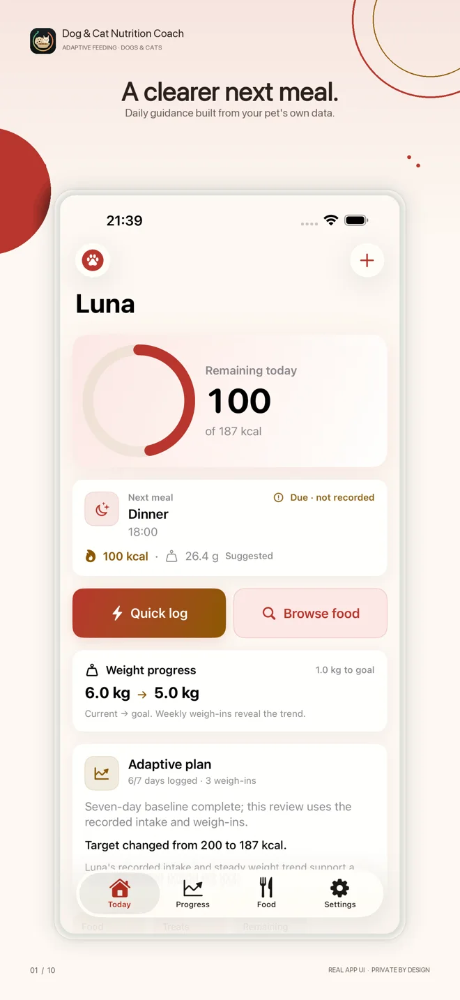
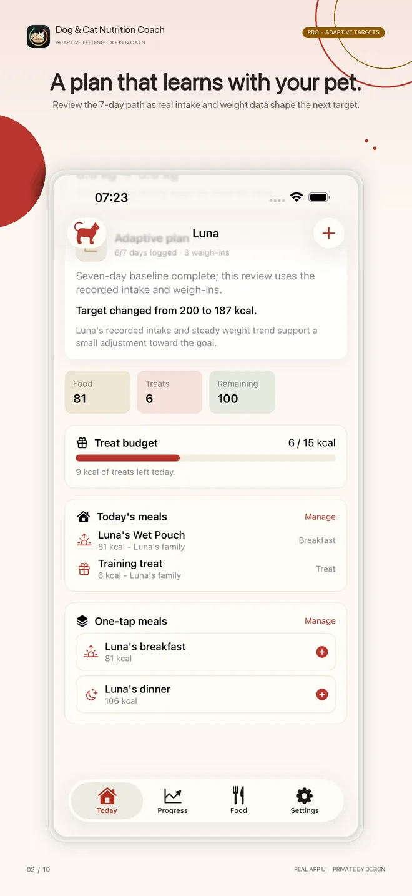
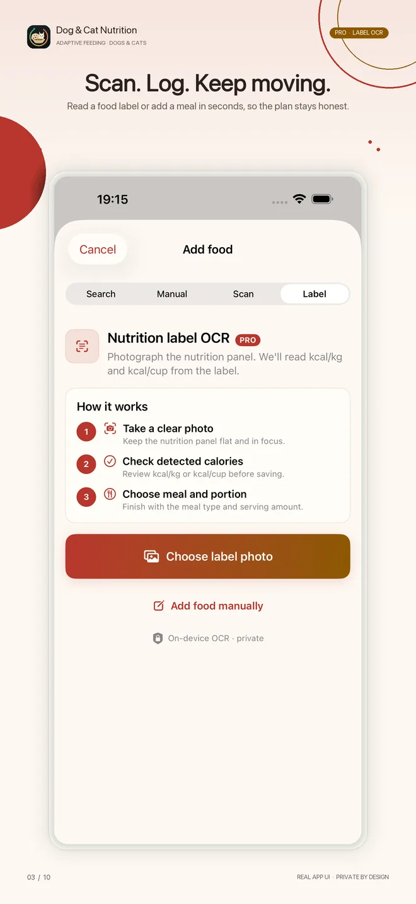
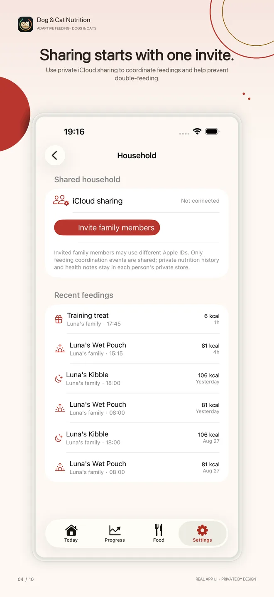
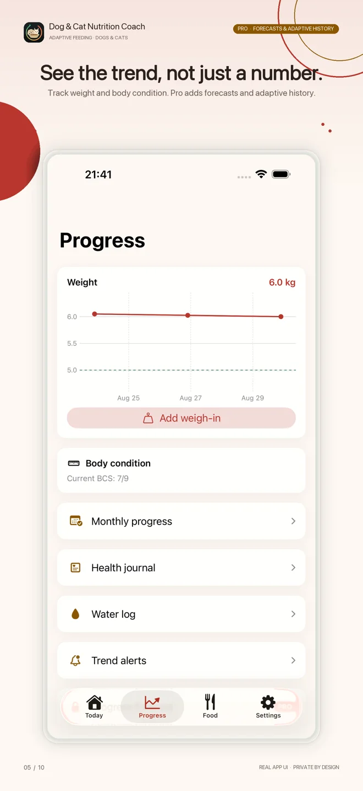
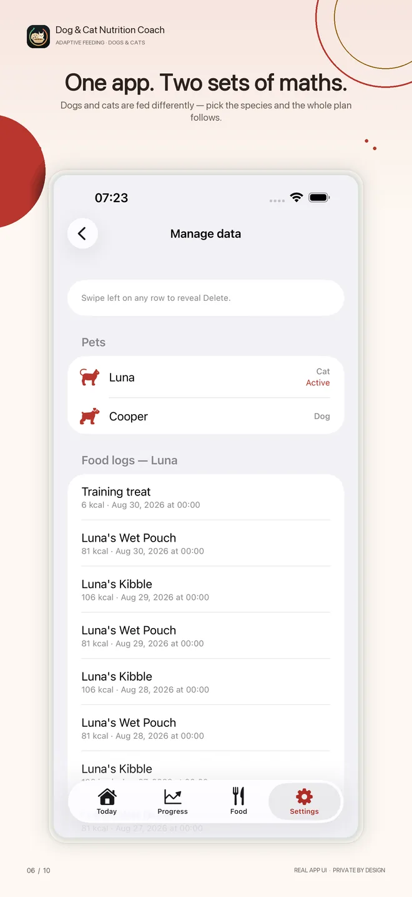
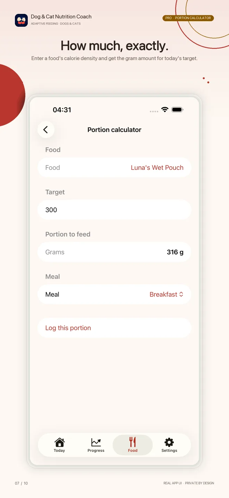
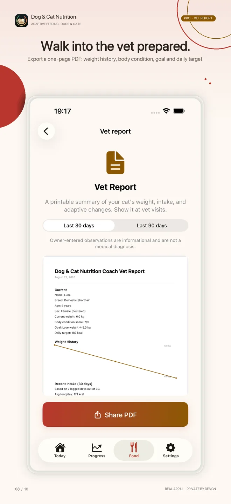
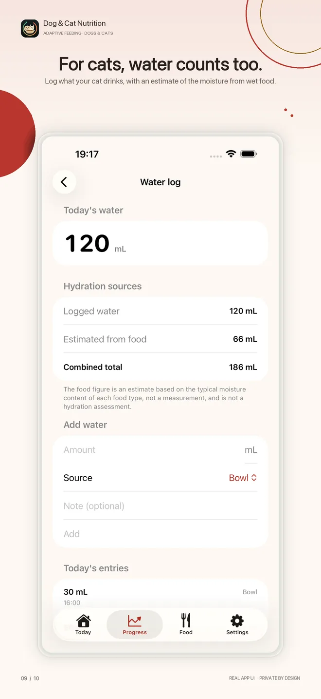
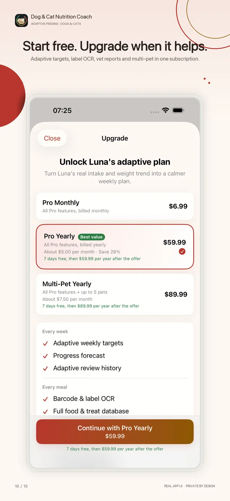

「うちの子に、どれだけあげればいいのか」。犬猫の栄養は、実際の食事量と体重の推移をもとに、犬と猫で別々の計算式を使った給与プランをつくり、毎週調整していきます。一度きりの計算ツールではありません。
App Store でダウンロード実際の食事量、実際の推移、そして目の前の動物に合った計算式。
実際の食事量と体重の推移を読み取り、毎週、1日の目標を見直します。維持、増やす、減らす、あるいは再確認。
ペットを追加するときに犬か猫かを選ぶと、エネルギーの計算式や給与ツールがアプリ全体で選んだペットに合わせて変わります。
バーコード読み取り、成分表示の写真読み取り、ワンタップのテンプレートで、毎日の記録の手間を最小限に。読み取りは端末内で行われます。
「控えめに」ではなく、1日にあげてよいおやつの量を具体的に。記録するたびに残りから引かれます。
ドライ・ウェット・フレッシュフードの割合を決めて、7日間の切り替えプランで無理なくフードを替えられます。
iCloud でペットを家族と共有すれば、だれが何をあげたかが見えて、二重にあげてしまうことがありません。
体重の履歴、ボディコンディション、食事量、これまでの調整をまとめた PDF と CSV を、30日分または90日分で書き出せます。
ホーム画面やロック画面で残りカロリーを確認。「あげた量」と「実際に食べた量」を分けて記録できます。
表示中のペットが猫のときは、置き餌からの切り替え、自動給餌器のスケジュール、飲水記録、好みの傾向が現れます。
プランを続けやすくする、4つのステップ。
現行版の実際の画面です。イメージ図ではありません。










まずは無料で。アプリがペットのことをわかってきたら、アップグレードを。
Pro 月額もあります。価格や、対象となる場合の紹介オファーは、お住まいの地域の App Store に表示されます。
犬猫の栄養は、栄養と体重をサポートするためのアプリであり、医療機器ではありません。獣医師による診断や治療は行いません。医療上の判断は必ず獣医師にご相談ください。
アプリと同じ計算式を、ダウンロードなしで試せます。